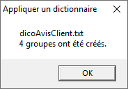
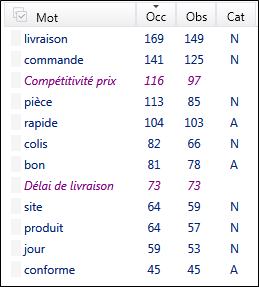
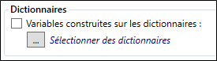
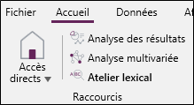

CRÉATION DE DICTIONNAIRES THÉMATIQUES
Le module d'analyse textuelle intégré dans Sphinx iQ3 permet de s’appuyer sur les mots et expressions contenus dans le texte pour effectuer un regroupement thématique. Il constitue une véritable aide à l’analyse des données textuelles en faisant ressortir, à partir d’une liste de mots et d’expressions les plus récurrents, une liste de thèmes les plus abordés. Il permet ainsi un énorme gain de temps pour identifier rapidement les thèmes et déterminer l’orientation générale des textes recueillis.
En effet, les mots et expressions du texte qui renvoient à un même concept sont regroupés par thème permettant ainsi d’associer l’ensemble des observations qui les contiennent à un ou plusieurs thèmes spécifiques. De la quantification des mots et expressions générés automatiquement dans le volet lexique, on aboutit à des variables thématiques réutilisables dans le module Quanti grâce aux tableaux de bord.
L’intérêt de la démarche via le Quali est de partir rapidement des observations brutes peu interprétables pour en dégager les principales thématiques et en avoir une vision Quanti comme l’illustre la figure suivante :

Analyse de texte par dictionnaire
Les principales étapes de l’analyse par dictionnaire sont :
Pour ce faire, il existe 2 méthodes :
-
Soit vous créez votre grille thématique préétablie dans un fichier .txt avec un thème par ligne suivi du signe = et d’au moins un premier mot ou une première expression comme dans l’exemple ci-dessous :
Clarté du site internet =bon site=excellent site=intuitif=site % simple=
Compétitivité prix =attractif=cher=compétitif=concurrence=prix=tarif=alignement % prix=
Délai de livraison =délai % livraison=délai=
Disponibilité des produits =disponibilité=disponible=rupture de stock=stock=épuisé=-
Soit vous groupez directement des mots et expressions du lexique qui font partie de la même thématique et vous les renommez.
Vous pouvez aussi ajouter des expressions au lexique de mots pour ce faire :
-
Accédez au groupe Lexique depuis l'onglet Accueil,
-
Cliquez sur Expression.
Par défaut, la case Nom est cochée pour afficher les expressions Nom % Nom : exemple « délai % livraison » ou Nom Nom : exemple « relais colis ».
Cochez la case Adjectifs pour afficher les expressions Adjectif Nom : exemple « livraison rapide », « bon prestation » ou Adjectif % Nom : exemple « livraison % rapide ».
REMARQUE : Notez bien que ces expressions sont déterminées par la notion de proximité et que le signe % est utilisé comme opérateur. Il remplace soit du bruit (articles, prépositions, conjonctions…), soit un ou plusieurs mots entre les deux mots qui composent l’expression. Il peut être suivi d’un chiffre de 1 à 9 (« %0 », « %1 », …, « %9 »).
Avec le signe %, le bruit est systématiquement ignoré pendant que le chiffre qui suit définit le nombre de mots de type Adjectifs et Noms que l’on va accepter entre les deux mots composant l’expression.
Plus d'informations sur l'utilisation de la notion de proximité.
En cliquant sur une expression dans la fenêtre « Gestion des expressions », une flèche verte apparaît permettant de l’ajouter à la liste à droite. Vous pouvez également saisir manuellement d’autres expressions. Ensuite, cliquer sur OK pour ajouter les expressions au lexique dans le volet latéral gauche.
-
Création à partir d’une grille préétablie
Pour créer un dictionnaire à partir d'une grille préétablie, procédez comme suit :
-
Dans l’onglet Accueil, groupe Lexique, cliquez sur Simplification.
-
Cliquez sur Reprendre.
-
Sélectionnez la case d'un dictionnaire.
-
Cliquez sur ....
-
Sélectionnez le fichier (.txt ou .dic).
-
Cliquez sur Ouvrir.
Dans notre exemple, Sphinx iQ3 reconnaît 4 groupes correspondant aux 4 lignes de notre fichier .txt.

-
Cliquez sur OK pour valider.
Ainsi, la fenêtre affiche la liste des thèmes avec les mots et expressions qu’ils contiennent, leur occurrence, le nombre d’observations les contenant et leurs catégories grammaticales.
Il est possible de supprimer ou de renommer les thèmes ou corriger le contenu.
Les regroupements créés apparaissent en violet dans le lexique.

Vous pouvez ensuite enrichir chaque thème par marquage et groupage comme dans la deuxième méthode que nous allons aborder.

Regroupement à partir du lexique (volet latéral gauche) par marquage et groupage
Pour regrouper des mots à partir du lexique, procédez comme suit :
-
Marquez les mots que vous souhaitez regrouper en cliquant dessus.
Si l’option « Voir les observations avec un mot coloré » du groupe Tris et Filtres (Onglet Corpus) est activée, seules les observations contenant les mots marqués apparaissent à droite. Ce qui permet de vérifier les mots dans leur contexte.
REMARQUE : Un nouveau clic ou un clic droit sur le mot marqué permet d’enlever le marquage.
Le moteur de recherche intégré dans Sphinx iQ3 permet également, en plus des filtres, de rechercher par mot clé et de naviguer dans le corpus pour les marquer tous.
EXEMPLE :
Dans l’exemple suivant, le mot « retard » a été recherché et marqué avec les expressions le contenant afin d’être regroupés au thème « Délai de livraison » -
Regroupez les mots marqués par un clic droit sur un droit dessus ou sur le thème en question (si celui-ci est marqué avec la fonction Grouper du menu contextuel).
EXEMPLE :
Regrouper le mot « retard » et ses expressions avec le thème « Délai de livraison » :


Une fois les regroupements terminés, Sphinx iQ3 génère automatiquement un dictionnaire avec l’ensemble des regroupements thématiques effectués.
Pour générer le dictionnaire et l'exporter sous format texte, procédez comme suit :
-
Depuis l'onglet Accueil, groupe Lexique, cliquez sur Simplifications.
-
Cliquez sur Exporter.
Avant d'exporter les simplifications, il convient de vérifier, pour chaque thème, les mots et expressions listés afin d’en éliminer les doublons et autres mots ou expressions ajoutées automatiquement.
À noter aussi qu’il faut alléger le dictionnaire au niveau des expressions afin d’obtenir un meilleur fonctionnement. En effet, une expression à trois mots est déjà codée par une expression similaire à 2 mots.
EXEMPLE :
« qualité % professionnalisme % site » peut être supprimée si l’expression « professionnalisme % site » est présente dans le même thème.REMARQUE : Il arrive que des doublons subsistent malgré le nettoyage dans la fenêtre de simplification (plus pratique qu’après export). Dans ce cas, le nettoyage sur le fichier exporté s’impose.

Vous pouvez à présent tester la pertinence du dictionnaire en l’appliquant à l’étude. Ce qui permet, grâce à l’affichage dans le tableur de corriger et / ou de codifier d’autres mots ou expressions manquants.
Pour appliquer le dictionnaire au texte analysé, procédez comme suit :
-
Cliquez sur Variables lexicales depuis l'onglet Données, volet Indicateurs.

-
Cochez la case Variables construite sur les dictionnaires.
-
Cliquez sur le bouton ....

-
Cliquez sur le bouton +.
-
Choisissez le/les dictionnaire(s) à utiliser, (depuis la bibliothèque de dictionnaires Sphinx ou depuis un autre répertoire).
-
Cliquez sur OK.
Un message s'affichera pour vous indiquer que les variables lexicales ont été créées.
-
Cliquez sur OUI pour les visualiser dans le tableur.
Dans notre exemple, c’est dicoAvisClient.txt qui a été choisi dans le répertoire de l’étude.
Vous pouvez voir ainsi que chaque observation (à gauche) est attribuée à une thématique (à droite). Ce qui donne une vision qualitative du corpus analysé, c’est-à-dire quels sont les principales thématiques abordées.
Celles-ci sont quantifiables afin qu’au-delà d’une liste de thèmes, on détermine ceux qui sont les plus importants. Cette démarche s’effectue par la visualisation dans le tableau de bord personnalisé.

Pour visualiser les thématiques dans le tableau de bord et les quantifier, procédez comme suit :
-
Depuis le volet Raccourcis du menu Accueil, cliquez sur Analyses des résultats.

-
Glissez-déposez votre variable sur la vue pour l'afficher (depuis la liste des variables).
Dans l’exemple « Avis clients », nous pouvons constater que sur 131 avis, 46 expriment leur satisfaction et sont prêts à recommander. Ce qui représente 35 % du corpus. À l’inverse, la rapidité de livraison avec 2 % constitue la thématique la moins abordée.